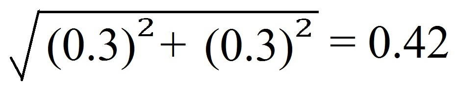

Gibson, R.S., Principles of Nutritional
Assessment: Introduction to
Anthropometry
3rd Edition
July 2024
Abstract
Anthropometric measurements are used to assess body size and body composition. The measurements are simple, safe, and non-invasive and provide information on past exposure, but cannot detect short-term disturbances or deficiency of a specific nutrient. There are three major sources of error in anthropometry: (i) measurement errors, (ii) alterations in the composition and physical properties of certain tissues, and, (iii) use of invalid assumptions in the derivation of body composition from the measurements.Anthropometric indices are derived from two or more raw measurements and are essential to interpret and group the anthropometric data. Selection of indices must take into account their sensitivity, specificity, predictive value, and any potential modifying factors. Examples of indices include weight-for-height, body mass index (weight kg) / (height m)2, and waist-hip circumference ratio. Anthropometric indices are often evaluated by comparison with predetermined reference limits or cutoff points. Calculation of the number and proportion of individuals (as %) with anthropometric indices below or above a designated reference limit or cutoff, generates “anthropometric indicators” that can be used in clinical and public health settings to classify individuals at risk of malnutrition. Examples of indicators used in this way include mid‑upper‑arm circumference (MUAC) with a cutoff < 115mm to identify severe acute malnutrition (SAM) in children 6–60mos, and WHZ < −2, BMIZ > +2, and HAZ < −2, used by WHO and UNICEF to define wasting, overweight, and stunting respectively in children < 5y and to define prevalence thresholds and identify priority countries. Cutoffs, unlike statistically derived reference limits, are based on functional impairment or clinical signs of malnutrition, and occasionally mortality.
The reference growth data recommended by WHO for international use are the prescriptive WHO Child Growth Standards for 0–5y, and the WHO growth reference data for older 5–19y. Updated childhood growth charts are also available for U.S. infants age 0–36mos and children 2–20y. Local reference data are preferred for body composition, although few are available. Instead, WHO recommends using reference data for MUAC, triceps, and subscapular skinfolds collected for the WHO Child Growth Standards.
CITE AS:
Gibson, R.S., Principles of Nutritional Assessment.
Introduction to Anthropometry https://nutritionalassessment.org/intant/
Email: Rosalind.Gibson@otago.ac.nz
Licensed under CC-BY-4.0
( PDF ).
“measurements of the variations of the physical dimensions and the gross composition of the human body at different age levels and degrees of nutrition”Subsequently, a number of publications made recommendations on specific body measurements for characterizing nutritional status, standardized measurement techniques, and suitable reference data (Jelliffe, 1966; WHO, 1968; Weiner and Lourie, 1969). Today, anthropometric measurements are widely used for the assessment of nutritional status and health, at both the individual and population levels. One of their main advantages is that anthropometric measurements may be related to past exposures, to present processes, or to future events (WHO, 1995).
For individuals in low-income countries, anthropometry is particularly useful when there is a chronic imbalance between intakes of energy, protein, and certain micronutrients. Such disturbances modify the patterns of physical growth and the relative proportions of body tissues such as fat, muscle, and total body water. For individuals in clinical settings, anthropometry can be used to diagnose failure to thrive in infants and young children, and monitor overweight and obesity in children and adults.
At the population level, anthropometry has an important role in targeting interventions through screening, in assessing the response to interventions, in identifying the determinants and consequences of malnutrition, and in conducting nutritional surveillance. Increasingly, anthropometry is also being used to characterize and compare the health and nutritional status of populations across countries (WHO/UNICEF, 2019).
9.1 Measurements, indices, and indicators
Anthropometric measurements are of two types. One group of measurements assesses body size, the other group appraises body composition. The most widely used measurements of body size are stature (length or height), weight, and head circumference; see Chapter 10 for more details. The anthropometric measurements of body composition are based on the classical “two component model” in which the body is divided into two major compartments, fat mass and the fat free mass. Skinfold thickness measurements are used to estimate of the size of the subcutaneous fat depot, which, in turn provides an estimate of total body fat: over one third of total body fat is estimated to be subcutaneous fat. The distribution of body fat is also important, with the measurement of waist circumference used increasingly as a proxy for the amount of intra-abdominal visceral fat. Waist circumference is recommended for use in population studies (WHO, 2011), as well as in clinical practice for the evaluation and management of patients with overweight or obesity (Ross et al., 2020).The fat-free mass consists of the skeletal muscle, non-skeletal muscle, soft lean tissue, and the skeleton. A major component of the fat-free mass is body muscle. As this is composed of protein, assessment of muscle mass can provide an indirect assessment of the protein reserves of the body. Measurements of thigh circumference and mid-upper-arm circumference (MUAC) can be used to assess skeletal muscle mass (Müller et al., 2016). Measurement of MUAC is especially useful for young children < 5y in emergency settings such as famines and refugee crises. In such settings, children often have a small amount of subcutaneous fat, so changes in MUAC tend to parallel changes in muscle mass; see Chapter 11 for more details.
Anthropometric indices are usually calculated from two or more raw measurements, and are essential for the interpretation and grouping of measurements collected in nutritional assessment. For example, the measurement of a child's body weight is meaningless unless it is related to the age or height of a child. In young children the three most commonly used growth indices are weight-for-age, height-for-age, and weight-for-height. The first two indices reflect body weight or height relative to chronological age, whereas weight-for-height assesses body weight relative to height.
Body mass index (BMI) is also widely used in children and adults to assess underweight, overweight, and obesity, and is calculated as (weight kg) / (height m)2. When height cannot be measured, as may occur in bed-bound or frail individuals, published equations based on a range of body measurements such as knee height, lower leg length, arm span, and ulna length can be used to provide an approximate estimate of height. Examples of equations for estimating height from these body measurements in adults are given in Madden et al. (2016). However, their usefulness for hospitalised patients may be questionable, if the equations have been derived from young and healthy populations (Reidlinger et al., 2014).
Examples of body composition indices include a combination of triceps skinfold and mid-upper-arm circumference, which together can be used to estimate mid-upper-arm fat area and mid-upper-arm muscle circumference or area, surrogates for total body fat content, and muscle mass, respectively. Other measurement combinations include the waist-hip ratio (i.e., the waist circumference divided by the hip circumference), an additional index of the distribution of body fat which can be measured more precisely than skinfolds. Moreover, measurements of waist-hip ratio as a surrogate for abdominal obesity, appear to be a stronger independent risk factor for risk of myocardial infarction, stroke and premature death than BMI, especially among men (Larsson et al., 1984; Lapidus et al., 1984).
In an effort to obtain more reliable estimates of percentage body fat and fat-fat-free mass based on anthropometric measurements in healthy adults, the sum of skinfold thickness measurements from multiple anatomical sites is also used in conjunction with population-specific or generalized regression equations to predict body density, and in turn, the percentage of body fat using one of three empirical equations. Once the percentage of body fat is calculated, total body fat content and the fat-free mass can be derived (see Chapter 11 for more details). Again, many of the prediction equations were developed on young, healthy, lean Caucasian population groups and, hence, are less appropriate for malnourished, obese, or elderly subjects or for other racial groups.
Anthropometric indices are often evaluated by comparison with the distribution of appropriate anthropometric reference data using standard deviation scores (Z‑scores) or percentiles. (see Section 9.4.3). From this, the number and proportion of individuals (as %) with anthropometric indices below or above a predetermined reference limit or cutoff are often calculated. A commonly used reference limit for the three main growth indices is a Z‑score of −2 (i.e., below the WHO reference median) (Section 9.4.2). When used in this way, the index and its associated reference limit or cutoff become an “indicator”; these are discussed below.
Anthropometric indicators are constructed from anthropometric indices, with the term “indicator” relating to their use in nutritional assessment, often for public health, or socio-medical decision-making at the population level. Indicators are also used in clinical settings to identify individuals at risk of malnutrition. To be valid, a substantial proportion of the variability of an anthropometric indicator should be associated with differences in nutritional status. WHO (1995) provide a detailed classification of recommended anthropometric indicators based on their uses for both targeting and assessing response to interventions, identifying determinants of malnutrition, or predicting malnutrition in populations of infants and children.
Anthropometric indicators should be chosen carefully in relation to both their proposed use and their attributes. Indicators vary in their validity, sensitivity, specificity, and predictive value; these characteristics are discussed briefly in Section 9.4.3. For example, although the indicator weight-for-age < −2 Z‑score is still widely used in health centers in many low-income countries for screening young children at risk of malnutrition, it is inappropriate. Children who are stunted but of normal weight, or alternatively, tall and thin may be incorrectly diagnosed as “healthy”. Instead, in these countries, the indicator length/height-for-age < −2 Z‑score should be used (Ruel et al., 1995).
| Anthropometric indicator | Application |
|---|---|
| Proportion of children (of defined
age and sex) with WHZ < −2 | Prevalence of wasting |
| Proportion of children (of defined age and sex) with HAZ < −2 | Prevalence of stunting |
| Proportion of children (of defined age and sex) with WAZ < −2 | Prevalence of underweight |
| Proportion
of children 0–5y (of defined age and sex) with BMIZ > +2 or BMIZ > +3 | Prevalence of overweight or obesity |
| Proportion of adult women or men with waist- hip ratios > 0.85 (F) and > 0.90 (M) | Prevalence of abdominal obesity and thus risk of metabolic syndrome |
| Proportion of children
6–60mos with MUAC < 115mm | Prevalence of
severe acute malnutrition (SAM) |
| Proportion of children with SAM who have MUAC > 125mm and no edema for at least 2wk after receiving treatment for SAM | Prevalence of children
ready for dis- charge following treatment for SAM |
9.2 Advantages and limitations of anthropometry
Anthropometric measurements are of increasing importance in nutritional assessment as they have many advantages (Box 9.1). However, anthropometric measures are relatively insensitive and cannot detect disturbances in nutritional status over short periods of time. Furthermore, nutritional anthropometry cannot identify any specific nutrient deficiency and, therefore, is unable to distinguish disturbances in growth and body composition induced by nutrient deficiencies (e.g., zinc) from those caused by imbalances in protein and energy intake.Certain non-nutritional factors (such as disease, genetic influences, diurnal variation, and reduced energy expenditure) can lower the specificity and sensitivity of anthropometric measurements (Section 1.4), although such effects generally can be excluded or taken into account by appropriate sampling and experimental design.
Nevertheless, nutritional anthropometry can be used to monitor changes in both growth and body composition in individuals (e.g., hospital patients) and in population groups, provided sources of measurement error and the effects of confounding factors are minimized (Ulijaszek & Kerr, 1999).
- Simple, safe, noninvasive techniques are involved, which can be used at the bedside of a single patient, but are also applicable to large sample sizes.
- Inexpensive equipment is required. It is portable, and durable and can be made or purchased locally.
- Relatively unskilled personnel can perform the measurement procedures if adequately trained
- Methods can be precise and accurate, if standardized techniques and trained personnel are used.
- Retrospective information is generated on past long-term nutritional history, which cannot be obtained with equal confidence using other techniques.
- Mild to moderate undernutrition, as well as severe states of under- or overnutrition, can be identified.
- Changes in nutritional status over time and from one generation to the next, a phenomenon known as the secular trend, can be evaluated.
- Screening tests that identify individuals at high risk to under- or overnutrition can be devised.
9.3 Errors in anthropometry
Errors can occur in nutritional anthropometry which may affect the precision, accuracy, and validity of the measurements, and thus indices and indicators. Three major sources of error are significant: measurement errors, alterations in the composition and physical properties of certain tissues, and the use of invalid assumptions in the derivation of body composition from anthropometric measurements (Heymsfield and Casper, 1987).Measurement errors arise from examiner error resulting from inadequate training, instrument error, and difficulties in making the measurement (e.g., skinfold thicknesses). The major sources of measurement error in anthropometry are shown in Boxes 9.2 and 9.3. Both random and systematic measurement errors may occur which reduce the validity of the index and any indicator constructed from the index; they have been extensively reviewed by Ulijaszek and Kerr (1999).
All measurements
- Inadequate instrument: Select method appropriate to resources.
- Restless child: Postpone measurement or involve parent in procedure or use culturally appropriate procedures.
- Errors in reading equipment: Training and refresher exercises, stressing accuracy, with intermittent oversight by supervisor.
- Errors in recording results: Record results immediately after measurement and have record checked by a second person.
Length
- Incorrect method for age: Use length only when child is < 2y.
- Footwear/headwear not removed: Remove as local culture permits (or make allowances).
- Head not in correct Frankfurt plane: Correct position of child before measuring.
- Child not straight along board and/or feet not parallel with movable board: Have assistant and child's parent present; don't take the measurement while the child is struggling; settle child.
- Board not firmly against heels: Correct pressure should be practiced.
Height
- Incorrect method for age: Use only when child is ≥ 2y.
- Footwear/headware not removed; Remove as local culture permits (or make allowances).
- Head not in correct Frankfurt plane, subject not straight, knees bent, or feet not flat on floor: Correct technique with practice and retraining; provide adequate assistance; calm noncooperative children.
- Board not firmly against head: Lower head board to compress hair.
Weight
- Room cold, no privacy: Use appropriate clinic facilities.
- Scale not calibrated to zero: Re-calibrate after every subject.
- Subject wearing heavy clothing: Remove or make allowances for clothing.
- Subject moving or anxious as a result of prior incident: Wait until subject is calm or remove the cause of anxiety.
9.3.1 Random measurement errors and precision
Random measurement errors limit precision or the extent to which repeated measurements of the same variable give the same value. Random measurement errors can be minimized by training personnel to use standardized techniques and precise, correctly calibrated instruments (Lohman et al., 1988) . Furthermore, the precision (and accuracy) of each measurement technique should be firmly established prior to use. To improve precision, two or three measurements on each individual should be conducted.A description of the measurement techniques used in the WHO Multicenter Growth Reference Study (MGRS) are available in de Onis et al. (2004), as well as in an anthropometric training video from WHO. In the WHO MGRS the equipment was calibrated regularly, using standard weights over the full weight range for the portable electronic weighing scales, metal rods of known length for both the infantometer and stadiometer, and calibration blocks of varying widths for the skinfold calipers.
Poor precision often reflects within-examiner error, but between-examiner error may also be significant in surveys with multiple examiners. The precision of a measurement technique can be assessed by calculating:
- Technical error of the measurement (TEM)
- percentage technical error (%TEM)
- Coefficient of reliability (R)
It is particularly important with these measurements to use the correct techniques. This requires training, supervision, and regular refresher courses. Always take into account any cultural problems, such as the wearing of arm bands etc.
Arm circumference
- Subject not standing in correct position: Position subject correctly.
- Tape too thick, stretched, or creased: Use correct instrument.
- Wrong arm: Use left arm.
- Mid-arm point incorrectly marked: measure and remark midpoint carefully.
- Arm not hanging loosely by side during measurement: ask subject to allow arm to hang loosely.
- Examiner not comfortable or level with subject: position subject correctly relative to examiner.
- Tape around arm not at midpoint: reposition tape.
- Tape too tight (causing skin contour indentation): loosen tape.
- Tape too loose: carefully tighten tape.
Head circumference
- Occipital protuberance / supraorbital landmarks poorly defined: position tape correctly.
- Hair crushed inadequately: carefully tighten tape.
- Ears under tape, or tension position poorly maintained at time of reading: repeat after positioning tape correctly.
- Headwear not removed: remove as local culture permits.
Triceps fatfold
- Wrong arm: use left arm.
- Mid-arm point or posterior plane incorrectly measured or marked: measure and remark midpoint carefully.
- Arm not loose by side during measurement: ask subject to allow arm to hang loosely.
- Finger-thumb pinch or caliper placement too deep (muscle) or too superficial (skin): correct technique with training and supervision.
- Caliper jaws not at marked site; reading done too early, pinch not maintained, caliper handle not released: correct technique with training and supervision.
- Examiner not comfortable or level with subject: ensure examiner is correctly positioned.
| Subject | Stature (m) as determined on repeat | (1) | (2) | Diff. | |||
|---|---|---|---|---|---|---|---|
| no. | 1 | 2 | 3 | 4 | ΣM2 | (ΣM)2/K | (1) − (2) |
| 1 | 0.865 | 0.863 | 0.863 | 0.864 | 2.984259 | 2.984256 | 0.000003 |
| 2 | 1.023 | 1.023 | 1.027 | 1.025 | 4.198412 | 4.198401 | 0.000011 |
| 3 | 0.982 | 0.980 | 0.989 | 0.985 | 3.873070 | 3.873024 | 0.000046 |
| 4 | 0.817 | 0.816 | 0.812 | 0.817 | 2.660178 | 2.660161 | 0.000017 |
| 5 | 0.901 | 0.894 | 0.900 | 0.903 | 3.236446 | 3.236401 | 0.000045 |
| 6 | 0.880 | 0.876 | 0.881 | 0.881 | 3.094098 | 3.094081 | 0.000017 |
| 7 | 0.948 | 0.947 | 0.947 | 0.946 | 3.587238 | 3.587236 | 0.000002 |
| 8 | 0.906 | 0.905 | 0.907 | 0.908 | 3.286974 | 3.286969 | 0.000005 |
| 9 | 0.924 | 0.924 | 0.926 | 0.924 | 3.418804 | 3.418801 | 0.000003 |
| 10 | 0.969 | 0.987 | 1.002 | 0.993 | 3.942343 | 3.942210 | 0.000133 |
| Σ = 0.000282 | |||||||
| TEM = = = 0.00307 | |||||||
Note that the size of the measurement also influences the size of the associated TEM, so that comparisons of precision of different anthropometric measurements using TEM cannot be made easily. This is highlighted in Table 9.3 in which the TEM for five anthropometric measurements taken during the initial standardization session conducted at the Brazilian site of the WHO Multicentre Growth Reference Study (MGRS) are presented (de Onis et al., 2004). Table 9.3 also depicts the maximum allowable differences between the measurements of two observers that were used in the WHO MGRS, and set based on TEMs achieved during the standardization session.
| measurement | Brazil TEM from pilot study |
Maximum allowable difference |
|---|---|---|
| Weight | Not available | 100g |
| Length | 2.5mm | 7.0mm |
| Head circumference | 1.4mm | 5.0mm |
| Arm circumference | 1.8mm | 5.0mm |
| Triceps skinfold | 0.44mm | 2.0mm |
| Subscapular skinfold | 0.43mm | 2.0mm |
The coefficient of reliability (R) is an alternative approach that is widely used for comparing measurement errors among anthropometric measurements. It ranges from 0 to 1 and can be calculated using the following equation: \[\small\mbox{ R = 1 −((TEM)}^{2}/ \mbox{s} ^{2}) \] where s2 is the between-subject variance. The coefficient indicates the proportion of between-subject variance in a measured population which is free from measurement error. Hence, a measurement with R = 0.95 indicates that 95% of the variance is due to factors other than measurement error.
Whenever possible, a coefficient of reliability > 0.95 should be sought. Coefficients of reliability can be used to compare the relative reliability of different anthropometric measurements, and the same measurements in different age groups, as well as for calculating sample sizes in anthropometric surveys.
More details of standardization procedures and calculation of precision using TEM, percentage TEM, and coefficient of reliability are given in Lohman et al. (1988). In general, the precision of weight and height measurements are high. However, for waist and hip circumferences, between-examiner error tends to be large and it is preferable for only one examiner to take these measurements. Because skinfolds are notoriously imprecise, both within- and between-examiner errors can be large. Therefore, rigorous training using standardized techniques and calibrated equipment are critical when skinfold measurements are taken.
9.3.2. Systematic measurement errors and accuracy
Systematic measurement errors affect the accuracy of anthropometric measurements or how close the measurements are to the true value. The most common form of systematic error in anthropometry results from equipment bias. For example, apparent discrepancies in skinfold measurements performed on the same person but with different calipers may be due to compression differences arising from variations in spring pressure and surface area of the calipers (Schmidt & Carter, 1990); Harpenden and Holtain skinfold calipers consistently yield smaller values than Lange calipers (Gruber et al., 1990). Errors arising from bias reduce the accuracy of the measurement by altering the mean or median value, but have no effect on the variance. Hence, such errors do not alter the precision of the measurement.The timing of some anthropometric measurements of body size and composition is also known to be critical, particularly for short-term growth studies: progressive decreases in the height of an individual during the day as a consequence of compression of the spinal column, for example, may seriously compromise the accuracy of height velocity measurements.
The determination of accuracy in anthropometry is difficult because the correct value of any anthropometric measurement is never known with absolute certainty. In the absence of absolute reference standards, the accuracy of anthropometric measurements is estimated by comparing them with those made by a criterion anthropometrist (Ulijaszek & Kerr, 1999), a person who has been highly trained in the standardized measurement techniques and whose measurements compare well to those from another criterion anthropometrist.
In preparation for the compilation of the new WHO Child Growth Standard, four anthropometrists were trained and standardized against a criterion anthropometrist, designated as the “lead” anthropometrist; see de Onis et al. (2004) for more details. All anthropometric measurements were taken and recorded independently by two designated anthropometrists, and their measurement values compared for maximum allowable differences (Table 9.3). Targets for sports anthropometrists are also available (Gore et al., 1996).
Attempts should always be made to minimize measurement errors. In longitudinal studies involving sequential anthropometric measurements on the same group of individuals (e.g., surveillance), it is preferable, whenever possible, to have one person carrying out the same measurements throughout the study to eliminate between-examiner errors. This is particularly critical when increments in growth and body composition are calculated; such increments are generally small and are associated with two error terms, one on each measurement occasion. Recommendations for the minimum intervals necessary to provide reliable data on growth increments during infancy and early childhood (Guo et al., 1991) and adolescence (WHO, 1995) are available.
In large regional surveillance studies, it is often necessary to use several well-trained anthropometrists. In such circumstances, the between-examiner differences among anthropometrists must be monitored throughout the study to maintain the quality of the measurements and thereby to identify and correct systematic errors in the measurements. This practice was followed during the WHO MGRS (de Onis et al., 2004).
In studies involving two longitudinal measurements, the TEM can be calculated to estimate the proportion of the difference that can be attributed to measurement error. For example, with a TEM of 0.3 for a given anthropometric measurement, the TEM for the difference between two measurements is:  because both TEM values contribute to the variance in the difference. Only if the difference exceeds 2 × 0.42 = 0.84 is there a 95% probability that the difference exceeds the measurement error alone.
Once assured that such differences are not a function of measurement error, then any changes in growth and body composition can be correlated with factors such as age, the onset of disease, response to nutrition intervention therapy, and so on.
The collection of longitudinal anthropometric data is more time consuming, expensive, and laborious than from cross-sectional surveys, and, as a result, the sample size is generally smaller. Hence, the probability of systematic sampling bias (Section 1.4.2) is generally greater than in more extensive cross-sectional surveys.
For cross-sectional studies, the examiners should be rotated among the subjects to reduce the effect of measurement bias of the individual examiners. Statistical methods exist for removing anthropometric measurement error from cross-sectional anthropometric data; details are given in Ulijaszek and Lourie (1994).
Cross-sectional surveys are useful for comparing population groups, provided that probability sampling techniques have been used to ensure that the samples are representative of the populations from which they are drawn (Chapter 1). Recently WHO has provided countries with tools to develop or strengthen their surveillance systems so they have the capacity to monitor changes in the Global Nutrition Targets for 2030. They include the following anthropometric indicators: stunting, wasting, low birthweight, and childhood overweight. For more details see: WHO Nutrition Tracking Tool.
9.3.3 Errors from changes in tissue composition and properties
Variation in the composition and physical properties of certain tissues may occur in both healthy and diseased subjects, resulting in inaccuracies in certain anthropometric measurements. Even among healthy individuals, body weight may be affected by variations in tissue hydration with the menstrual cycle (Heymsfield and Casper, 1987; Madden and Smith, 2016).Skinfold thickness measurements may be influenced by variations in compressibility and skin thickness with age, gender, and the level of tissue hydration (Martin et al., 1992; Ward and Anderson, 1993). For example, repeated measurements of skinfolds, over a short period (i.e., 5min), may actually decrease accuracy of skinfolds because later measurements are more compressed due to the expulsion of water from the adipose tissue at the site of the earlier measurement (Ulijaszek and Kerr, 1999).
The accuracy of waist circumference is affected by both the phase of respiration at the point of measurement and by the tension of the abdominal wall. The phase of respiration is important because it determines the extent of fullness of the lungs and the position of the diaphragm at the time of the measurement. Increasing the tension of the abdominal wall (by sucking in) is frequently an unconscious reaction which is also important because it reduces the waist measurement. To minimize these errors, WHO (2011) recommends advising the subject to relax and take a few deep, natural breaths before the actual measurement and at the end of normal expiration.
In addition, during aging, demineralization of the bone and changes in body water may result in a decrease in the density of the fat-free mass (Visser et al., 1994; JafariNasabian et al., 2017), which are not always taken into account when calculating total body fat and hence fat-free mass from skinfolds via body density (see Chapter 11 for more details).
9.3.4 Invalid models and errors in body composition
Invalid assumptions may lead to erroneous estimates of body composition when these are derived from anthropometric measurements, especially in obese or elderly patients and those with protein-energy malnutrition or certain disease states. For instance, use of skinfold thickness measurements to estimate total body fat assumes that (a) the thickness of the subcutaneous adipose tissue reflects a constant proportion of the total body fat and (b) the sites selected represent the average thickness of the subcutaneous adipose tissue. In fact, the relationship between subcutaneous and internal fat is nonlinear and varies with body weight, age, and disease state. Very lean subjects have a smaller proportion of body fat deposited subcutaneously than do obese subjects, and in malnourished persons there is probably a shift of fat storage from subcutaneous to deep visceral sites. Variations in the distribution of subcutaneous fat also occurs with age, sex, and ethnicity or race (Wagner and Heyward, 2000; He et al., 2002).Estimates of mid-upper-arm muscle area are used as an index of total body muscle and the fat-free mass (Chapter 11), regardless of age and health status of the subjects. Such estimates are made, despite the known changes in the relationship between arm muscle and fat-free mass with age and certain disease states (Heymsfield and McManus, 1985), and the questionable accuracy of the algorithms used (Martine et al., 1997). Moreover, even the corrected algorithms developed for adults overestimate arm muscle area in obese persons when compared with the determination by computerized tomography (Forbes et al., 1998).
Increasingly, body composition is assessed by laboratory methods; these are described in Chapter 14. Even laboratory methods are based on certain assumptions that have been challenged in recent years. For example, until recently, densitometry, frequently using underwater weighing, has been the gold standard reference method for the determination of the percentage of body fat. The assumptions used in densitometry are that the densities of the fat mass and fat-free mass are constant at 0.90 and 1.10kg/L, respectively (Chapter 11). Several researchers have questioned the validity of using a constant density of the fat-free mass for groups who vary in age, gender, levels of body fatness, and race or ethnicity (Visser et al., 1997). During aging, the density of the fat-free mass may decrease due to demineralization of the bone and changes in body water, as noted above (Visser et al., 1994; JafariNasabian et al., 2017), which are not always taken into when calculating total body fat from skinfolds via body density, leading to a 1%–2% overestimate of the body fat content in such subjects (Deurenberg et al., 1989); see Chapter 11 for more details.
In contrast, persons of African descent have a larger fat-free mass because they have a greater bone mineral density and body protein content compared to Caucasians (Wagner and Heyward, 2000). Such differences lead to an underestimate of body fat, when generalized equations developed for Caucasians are used.
Percentage of body fat can also be determined using an isotope dilution technique and dual‑energy X‑ray absorptiometry (DXA) (Chapter 14). Both of these methods assume a constant hydration of the fat-free mass (i.e., 73.2% water content), despite knowledge that it varies with age (Wang et al., 1999), obesity, and pregnancy (Hopkinson et al., 1997), and throughout the course of a clinical condition (e.g., inflammation) (Müller et al., 2016). When the actual hydration of fat-free mass is higher than the assumed value, then the percentage of body fat is underestimated by isotope dilution techniques (Chapter 14) (Deurenberg-Yap et al., 2001). For example, even when pregnancy-specific values for hydration have been applied to account for the increased accretion of water that occurs during pregnancy, individual estimates of fat mass using isotope dilution differed by > 3kg from values based on the four-compartment model (Hopkinson et al., 1997). In contrast, hydration effects on estimates of fat by DXA are not significant (Pietrobelli et al., 1998).
Fortunately, the advent of multicomponent models (i.e., the 4‑compartment-model) with minimal assumptions for assessing body composition circumvent the use of older methods, which use assumptions that are not always valid for certain ethnic groups or the elderly (Müller et al., 2016). Nevertheless, the use of multicomponent models is expensive, requiring more time and facilities.
9.4 Interpretation and evaluation of anthropometric data
Anthropometric indices are derived from two or more raw measurements, as noted earlier. Normally, it is these indices that are interpreted and evaluated — not the raw measurements. Anthropometric indices can be used at both the individual and the population levels to assess nutritional status and to screen and assess a response during interventions. In addition, in populations, anthropometry can be used to identify the determinants and consequences of malnutrition and for nutritional surveillance. To achieve these objectives, knowledge of factors that may modify or “condition” the interpretation of abnormal anthropometric indices is generally required. These conditioning factors are briefly discussed below, together with anthropometric reference data and methods to evaluate anthropometric indices, including classification systems that identify individuals and populations as “at risk” for malnutrition.9.4.1 Conditioning factors
A variety of factors are known to modify or condition the interpretation of anthropometric data and must be taken into account. Some important examples include age, birthweight, birth length, gestational age, sex, parental stature, and feeding mode during infancy. Maturation during adolescence, prepregnancy weight, maternal height, parity, smoking, pregnancy, and ethnicity are major conditioning factors for adults (WHO, 1995).Information on some of these conditioning factors can be obtained by physical examinations, questionnaires, or self-reports. An accurate assessment of age is especially critical for the derivation of many anthropometric indices used to identify abnormal anthropometry, notably height-for-age and weight-for-age. See: WHO Child Growth Standards.
Age is also important for categorizing the data into the age groups recommended by WHO for analysis and interpretation (WHO/UNICEF, 2019); see Chapter 13 for details. In more affluent countries, the assessment of age using birth certificates is generally easy, but in some low-income countries, local calendars of special events are often constructed to assist in identifying the birth date of a child.
Alternatively, for young children, age is sometimes assessed by counting deciduous teeth. This method is most appropriate at the population level because of the wide variation among individuals in the timing of deciduous eruption (Delgado et al., 1975). For individuals, bone age can be estimated from the left-hand-wrist radiograph using the Tanner Whitehouse II method (Tanner et al., 1983). Gorstein (1989) has highlighted the marked discrepancies that may occur in the prevalence estimates of undernutrition during infancy when different methods are used to determine age.
With infants, an accurate assessment of birth weight, and, if possible, birth length and gestational age, is also important (Hediger et al., 1999). Assessment of gestational age is especially critical for the interpretation of both size-for-age measurements during infancy and the neurodevelopmental progress of preterm infants. It is also essential for the management of pregnancy and the treatment of new-born infants.
Several strategies are available for estimating gestational age. Prenatal measures of gestational age include calculating the number of completed weeks since the beginning of the last menstrual period, prenatal ultrasonography, and clinical methods; they are all described in Chapter 10. In public health settings, the definition of gestational age on the basis of the last menstrual period is most frequently used, although it is associated with several problems: errors may occur because of irregular menses, bleeding early in pregnancy, and incorrect recall by mothers. Prenatal ultrasonography during the first or second trimester, although considered the gold standard method for assessment of gestational age, is not universally available, especially in low-income countries. Furthermore, the quality of both the equipment used and the technical training varies.
For studies of the adolescent age group, defined by WHO
(1995)
as 10–19y,
information on maturation should also be collected in view of the marked
variation in the timing of the maturational changes during adolescence.
The best measure of maturity is bone age — often termed skeletal
maturation — because it can be obtained for both sexes over a wide age
range. However, special equipment and expertise are required for the
assessment of bone age. Hence, instead, surrogate measures of somatic
maturation are generally used in nutrition surveys. WHO
(1995)
recommends the use of two maturational events for each sex to assist in
interpreting anthropometric data during adolescence: one marker
signaling the beginning of the adolescent growth spurt in each sex, and
one indicating that the peak velocity for height and associated changes
have passed. In girls, the indicator that can be used to signal that the
adolescent growth spurt has begun is the start of breast development,
which precedes peak height velocity by about 1y.
The marker indicating that most of the adolescent growth
spurt has been completed is the attainment of menarche,
which begins a little more than 1y after peak height
velocity (Figure 9.1). In boys, the corresponding indicators
signaling the beginning and completion of the adolescent growth
spurt are adolescent changes in the penis,
characterizing G3, followed by the attainment of adult voice, respectively
(Figure 9.1).
When an assessment of somatic maturation cannot be obtained by physical examination and questioning, then a self-administered questionnaire containing drawings illustrating Tanner's stages of development of breasts and pubic hair for females, or pubic hair and male genitalia, may be used. Adolescents are requested to select the drawing closest to their stage of development, as described in Morris and Udry (1980).
9.4.2 Appropriate anthropometric reference data
In public health settings, appropriate anthropometric reference data facilitate international comparisons of anthropometric indices across populations and enable the proportion of individuals with abnormal indices to be determined relative to the reference population. Such comparisons enable the extent and severity of malnutrition in the study group to be estimated. In surveillance studies, reference data allow the evaluation of trends over time, as well as the effectiveness of intervention programs to be assessed. Reference data can also be used in clinical settings to monitor growth of individuals, detect abnormal changes in growth, and assess response to treatment (WHO, 1995).The WHO recommends the use of the WHO Child Growth Standards for young children from birth to 5y for international use (WHO, 2006) in view of the small effect of ethnic and genetic differences on the growth of infants and young children compared with the environmental, nutritional, and socio-economic effects, some of which may persist across generations. The WHO Child Growth Standard was developed as a result of the technical and biological limitations identified with the earlier NCHS/WHO growth reference (Garza and de Onis, 1999). A prescriptive approach depicting physiological human growth under optimal conditions was used for the new Child Growth Standards so they represent how young children should grow, rather than as a “reference” describing how children do grow. To achieve this goal, a set of individual eligibility criteria were developed: term singleton infants with non-smoking mothers, a health status that did not constrain growth, and mothers who were willing to follow current WHO feeding recommendations. The design combined a longitudinal study from birth to 24mos with a cross-sectional study of children aged 18–71mos based on pooled data from 6 participating countries (Brazil, Ghana, India, Norway, Oman, and the United States) (de Onis et al., 2004). WHO has developed a tool for the application of the WHO Child Growth Standards which includes instructions on how to take the measurements, interpret growth indicators, investigate causes of growth problems, and how to counsel caregivers. An anthropometry training video is also available. For more details, see: WHO Child Growth Training Module.
For older children, the WHO growth reference data for school-age children and adolescents 5–19y should be used (de Onis et al., 2007). This is a reconstruction of the original 1977 National Centre for Health Statistics (NCHS) data set supplemented with data from the WHO Child Growth Standard. The statistical methodology used to construct this reference was the same as that used for the WHO Child Growth Standard.
A series of prescriptive standards for monitoring fetal, newborn growth, and gestational weight gain have also been developed for international use by the INTERGROWTH‑21st project. This project adhered to the WHO recommendations for assessing human size and growth, and followed healthy pregnant women longitudinally from 9wks of fetal life to 2y (Papageorghiou et al., 2018; Ismail et al., 2016). Populations from urban areas of 8 countries in which maternal health care and nutritional needs were met (Brazil, China, India, Italy, Kenya, Oman, the UK and the USA) were involved to ensure universal multi-ethnic growth standards were generated that represent how fetuses should grow. Postnatal growth standards for preterm infants were also developed by this group (Villar et al., 2015).
Updated childhood growth charts have been prepared by the Center for Disease Control (CDC) for U.S children for two age groups: 0–36mos and 2–20y. These CDC 2000 growth charts are based primarily on physical measurements taken during five nationally representative surveys conducted between 1963 and 1994, although some supplemental data were also used. When creating these revised growth charts, two data sets were excluded: growth data for very low birthweight infants (< 1500g) whose growth differs from that of normal birth-weight infants, and weight data for children > 6y who participated in the NHANES III survey. The latter data were excluded from both the revised weight and BMI growth charts because their inclusion shifted the upper percentile curves. Hence, the exclusion of these selected data resulted in a modified growth reference that is not a purely descriptive growth reference because it does not contain representative national data for all variables (Kuczmarski et al., 2000). A comparison of these CDC 2000 Growth Charts with the WHO Child Growth Standards is available in de Onis et al. (2007).
For body composition indices, use of local reference data are preferred because racial differences exist in both body proportions, and the amount and distribution of subcutaneous and intra-abdominal fat (Wagner and Heyward, 2000; He et al., 2002; Lim et al., 2019). In practice, however, only a few countries have local body composition reference data. In the absence of such local data, WHO recommend the use of the reference data for mid-upper-arm circumference (MUAC), triceps and subscapular skinfolds based on the data collected during the WHO MGRS on children age 0–5y. Electronic copies of the WHO tables and charts of percentiles and Z‑scores for MUAC‑for-age, triceps-for-age, and subscapular-for age by sex are available for children from age 3mos to 71mos and are included in WHO Child Growth Standards.
In clinical settings, abnormal changes in the rate of growth of a child can be detected much earlier when growth velocity charts, rather than distance growth charts, are used; see Chapter 13 for more details. Growth velocity charts are based on longitudinal studies during which the same child is measured serially, and the growth rate calculated for each interval. WHO has developed a set of growth velocity charts based on the WHO MGRS described earlier for international use; see de Onis et al. (2011) for more details.
Several different distance growth standards have been compiled, depending on the specific determinants of growth. For example, the new international postnatal growth standards should be used for preterm infants (Villar et al., 2015) in view of the difference in weight, length, and head circumference between preterm and full-term infants. Moreover, the time period over which these differences extend varies with the growth measurement. Differences are significant until 18 mos for head circumference, until 24mos for weight-for-age, and up to 3.5y for length/height-for-age. Alternatively, tempo-conditional growth charts can be used for monitoring the growth of individual children during adolescence (Figure 9.2).Parent-allowed-for growth reference data are available for children from 2–9y when nonfamilial short stature is of concern. Cole (2000) developed a novel parent-allowed-for-height chart that adjusts for mid-parent, single parent, or sibling height based on the UK90-height reference. Special growth charts have also been compiled for children with certain genetic disorders such as Down's syndrome or other developmental disorders in which growth patterns differ from the reference growth curves.
9.4.3 Methods of evaluating anthropometric indices
For studies of both individuals and populations, the anthropometric indices can be compared to the reference population using percentiles or Z‑scores derived from the distribution of the anthropometric reference data. A percentile refers to the position of the measurement value in relation to all the measurements for the reference population, ranked in order of magnitude. A Z‑score (or standard deviation score) measures the deviation of the value for an individual from the median value of the reference population, divided by the standard deviation of the reference, as shown below: \[\small \mbox{Z‑score or SD score = } \frac {\mbox {(observed value) − (median reference value)}}{\mbox {(standard deviation of reference population)}}\] In most industrialized countries, percentiles are used because no errors are introduced if the data have a skewed distribution. Weight-for-age, weight-for-height, and many circumferential and skinfold indices have skewed distributions. percentiles are not appropriate for use in low- and middle-income countries (LMICs) where many children may fall below the lowest percentile.Three methods have been recommended by WHO to evaluate cross-sectional anthropometric data for use in public health; these are summarized in Box 9.4.
- Comparison of the frequency distribution of anthropometric indices with appropriate WHO growth reference data using Z‑scores
- Summary statistics of the Z‑scores: mean; median; SD; standard error (SE) with the 95% confidence interval (CI) for each growth indicator
- Calculation of number and proportion of individuals (as %)with anthropometric indices below or above a designated cutoff (95% CIs) for each age and sex group.
Summary statistics can also be used when anthropometric indices are expressed as Z‑scores in population studies. In the example given in Figure 9.4, the calculated mean height-for-age Z‑score (-1.83) for the children was markedly lower than zero — the expected value for the reference distribution. This statistic alone indicates that the entire distribution has shifted downward, suggesting that most, if not all of the individuals, are affected by linear growth retardation, as was clear from the frequency distribution of the height-for-age Z‑scores compared with the corresponding reference distribution depicted, in Figure 9.4.
Note, summary statistics cannot be calculated in this way for data from a population expressed in terms of percentiles which are often not normally distributed.
The third method itemized in Box 9.4 involves calculating the percentage of individuals with anthropometric indices below or above predetermined reference limits or cutoff points. When used in this way, the anthropometric index and its associated reference limit or cutoff point are termed an “indicator” as described earlier. This approach is used to classify individuals as “at risk” to malnutrition and is used by governments and International Agencies (e.g., WHO and UNICEF) to generate prevalence estimates of malnutrition for information and comparisons across countries, as well as for advocacy. The approach is described in more detail below.
9.4.4 Classification systems
Classification systems are used in both clinical settings and in public health. All use at least one anthropometric measurement and one or more reference limit derived from appropriate reference data (i.e., indicator) to classify at risk individuals. Alternatively, cut-off points are used. In practice, classification schemes are not perfect, some misclassification will always occur so that some individuals identified as “at risk” to malnutrition will not be truly malnourished (false positives), and others classified as “not at risk” to malnutrition will in fact be malnourished (false negatives). Misclassification arises because there is always biological variation among individuals (and hence in the normal levels defined by the measurement) (Fraser, 2004); see Chapter 13 for more details.Reference limits for anthropometric indices are derived from a reference distribution and can be expressed in terms of Z‑scores or percentiles. In low income countries reference limits defined by Z‑scores are frequently applied, with scores below −2 or above +2 Z‑scores of the WHO Child Growth Standard or WHO Growth Reference used to designate individuals with either unusually low or unusually high anthropometric indices (WHO, 1995). This approach is used because statistically 95% of the international reference population fall within the central range assumed to be “healthy”. Therore, theoretically, the proportion of children with a Z‑score less than −2 or greater than +2 in a study population should be ≈ 2.3%. Clearly, if the proportion in the study population with such low or high Z‑scores is significantly greater than this, then the study population is seriously affected. The WHO uses the below −2 Z‑scores of the WHO reference median for weight-for-age, length/height-for-age, or weight-for-height to classify children as underweight, stunted, or wasted, respectively.
In industrialized countries, the percentiles commonly used for designating individuals as “at risk” to malnutrition are either below the 3rd or 5th and above the 97th or 95th percentiles. The limits chosen depend on the reference data used: see Chapter 13 for more details.
There is nothing immutable about a reference limit at −2 Z‑score, despite their use by countries and agencies to generate prevalence estimates, most notably for stunting and wasting. As a consequence, attempts have been made to establish “cutoffs” for some anthropometric indicators to improve the ability to discriminate between children who are malnourished and those who are “healthy”. These cutoffs have been established by a review of the anthropometric characteristics of individuals with either clinically moderate or severe malnutrition or who subsequently die. However, many other characteristics of individuals such as age, sex, life-stage, race/ethnicity, genetics, and morbidity or nutritional status may affect the relationship under study (Hondru et al., 2019; Yaghootkar et al., 2020; Wright et al., 2021). Hence, in practice, defining cutoffs is difficult because the relationship between the indices and the biological factors cannot be generalized from one region to another (WHO Expert Consultation, 2004).. Consequently, in some studies universal cutoff points are used, whereas in others the methods used to identify the cutoff points applied are not always well documented.
As an example in a study of low BMI and morbidity in Pakistan, a reported a cutoff of < 18.5 was associated with higher morbidity, whereas in Calcutta it was < 16.0 (Campbell and Ulijaszek, 1994; Kennedy and Garcia, 1994).
Cut-offs for BMI, waist circumference, and waist-hip ratio associated with risk of cardiovascular disease and type 2 diabetes have also been extensively investigated among different ethnic groups (Ding et al., 2020; WHO Expert Consultation, 2004; Lear et al., 2010). Some expert groups have defined lower waist circumference cutoffs for adults of Asian descent compared to Europeans (IDF, 2006).
Receiver operating characteristic (ROC) curves are often used to determine cutoff points. This is a graphical method of comparing indices and portraying the trade-offs that occur in the sensitivity and specificity of a measurement or index when the cutoffs are altered. To use this approach, a spectrum of cutoffs over the observed range of the indicator results is used, and the sensitivity and specificity for each cutoff calculated. Next, the sensitivity (or true-positive) rate is plotted on the vertical axis against the true negative rate (1−specificity) on the horizontal axis for each cutoff point, as shown in (Figure 9.6).| Arm circum- ference (mm) | Sensitivity (%) | Specificity (%) |
Relative Risk of death |
|---|---|---|---|
| ≤ 100 | 42 | 99 | 48 |
| 100–110 | 56 | 94 | 20 |
| 110–120 | 77 | 77 | 11 |
| 120–130 | 90 | 40 | 6 |
Unfortunately, because sensitivity and specificity data for the anthropometric indices selected are usually not known for the population under study, the data required to plot ROC curves are often obtained elsewhere, even though the values may not be appropriate for the population under study because of the many factors known to influence cutoff values, as noted earlier; see Chapter 13 for more details. Ultimately the choice of an index and an associated cutoff point (i.e., an indicator) depends on the resources available and the purpose for which it is being used. The latter can range from screening for disease or monitoring to detect changes in prevalence of malnutrition etc. For more discussion on the selection of anthropometric indicators, see Brownie et al. (1986) and WHO (1995).
Screening tools to identify those who are malnourished in clinical or public health settings can be based on single or multiple measurements and associated reference limits or cutoff points. An example of a screening tool used in clinical settings is the Malnutrition Universal Screening Tool (MUST), widely used to identify adults who are at risk of undernutrition or obesity (See Chapter 27). MUST is based on height and weight measurements from which both a BMI score (from 3 cutoffs) assessed via a chart and weight loss in previous 3–6mos, can be derived, followed by establishing acute disease effect and score. From the sum of the three scores, the overall risk of malnutrition is calculated, with management guidelines provided according to the level of risk (low; medium; high). More details are available: Malnutrition Universal Screening Tool .
In public health emergencies, a screening tool based on a single measurement (i.e., MUAC) and associated cutoff (i.e., < 115mm) is often used to identify severe acute malnutrition (SAM) in children 6–60mos. This MUAC cutoff was chosen because children with a MUAC < 115mm were observed to have a highly elevated risk of death compared to those with a MUAC > 115mm (Myatt et al., 2006).
For defining overweight and obesity in children and adolescents, WHO recommends the use of BMI-for-age Z‑scores and reference limits based on Z‑scores. For children (0–5y), a Z‑score for BMI-for-age above +1 is described as being “at risk of overweight”, above +2 as “overweight”, and above +3 as “obese” based on the WHO Child Growth Standard. For children 5–19y, BMI-for-age Z‑scores above +1 and above +2 based on the WHO 2007 growth reference data are recommended (de Onis & Lobstein, 2010). To classify overweight and obesity in adults, however, WHO recommends a graded classification scheme, as shown in (Table 9.5).
| Classification | BMI (kg/m2) | Risk of comorbidities |
|---|---|---|
| Underweight | < 18.50 |
Low (but risk of clinical problems is increased) |
| Normal range | 18.50–24.99 | Average |
| Overweight | ≥ 25.00 | |
| Pre-obese | 25.00–29.99 | Increased |
| Obese class I | 30.00–34.99 | Moderate |
| Obese class II | 35.00–39.99 | Severe |
| Obese class III | ≥ 40.00 | Very severe |
Increasingly, it is recognized that in low-income countries, multiple anthropometric deficits may occur simultaneously in children and amplify their risk of morbidity and mortality. Consequently, a composite index of anthropometric failure (CIAF) has been developed, and is described in Chapter 13.
In public health, screening tools are also used to map countries according to levels of severity of malnutrition (UNICEF/WHO/World Bank, 2021) in order to identify priority countries. Five prevalence thresholds (as %) based wasting (i.e., WHZ < −2), overweight (BMIZ > +2), and stunting (i.e., HAZ < −2) have been developed by WHO and UNICEF; these are depicted in (Table 9.6). The fifth threshold labelled “very low” and of no public health concern was included across all three indicators to reflect the expected prevalence of 2.3% (rounded to 2.5%) below/above 2 SDs from the median of the WHO Child Growth Standard.
| Wasting | Overweight | Stunting | ||||||
|---|---|---|---|---|---|---|---|---|
| Prevalence thresholds (%) | Labels | (n) | Prevalence thresholds (%) | Labels | (n) | Prevalence thresholds (%) | Labels | (n) |
| < 2·5 | Very low | 36 | < 2·5 | Very low | 18 | < 2·5 | Very low | 4 |
| 2·5 – < 5 | Low | 33 | 2·5 – < 5 | Low | 33 | 2·5 – < 10 | Low | 26 |
| 5 – < 10 | Medium | 39 | 5 – < 10 | Medium | 50 | 10 – < 20 | Medium | 30 |
| 10 – < 15 | High | 14 | 10 – < 15 | High | 18 | 20 – < 30 | High | 30 |
| ≥ 15 | Very high | 10 | ≥ 15 | Very high | 9 | ≥ 30 | Very high | 44 |
The number of countries in different threshold categories for wasting, overweight, and stunting, also shown in (Table 9.6), is based on data from 134 countries. Comparison of the prevalence estimates for each anthropometric indicator can trigger countries to identify the most appropriate intervention program to achieve “low” or “very low” prevalence thresholds.
Details of the techniques used to measure body size and body composition, together with the indices derived from these measurements, are discussed in Chapters 10 and 11, whereas Chapter 13 discusses methods used for evaluation of anthropometric indices and their application at the individual and population level.